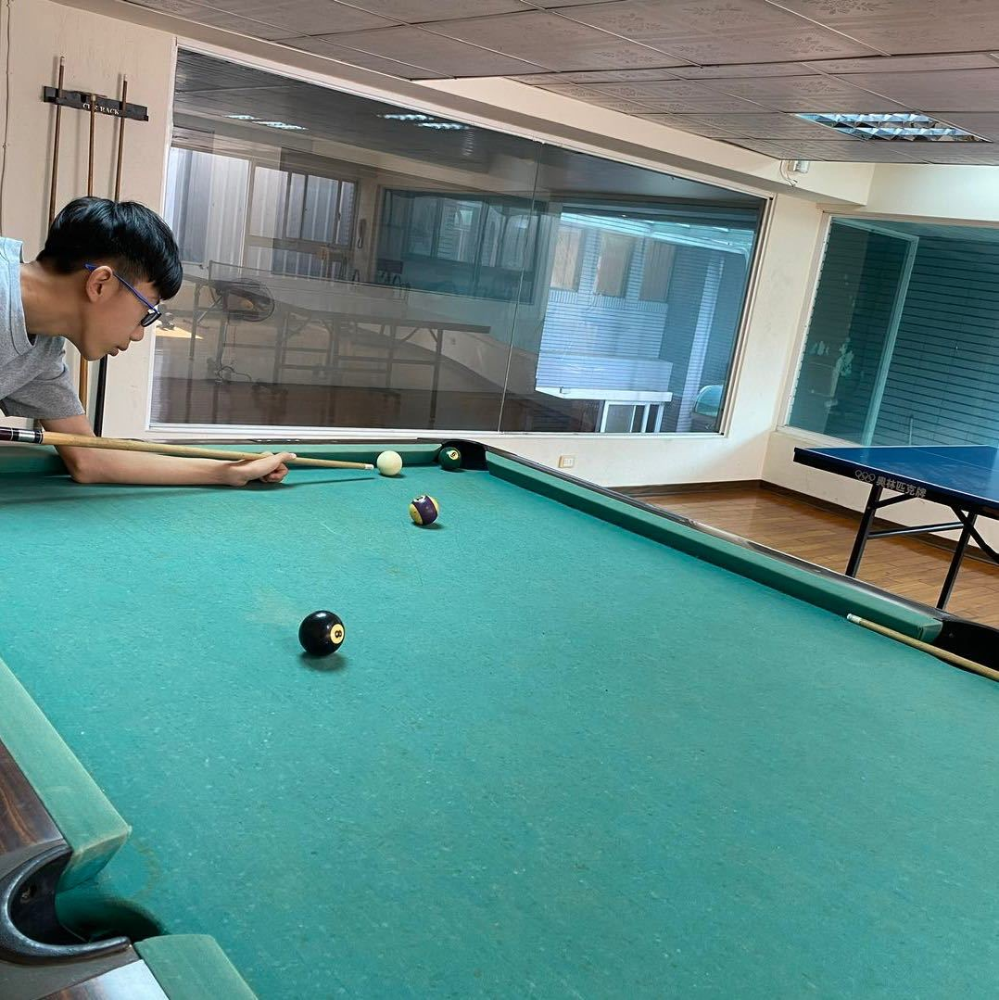

關於我

你好！我是Yi3849，一位充滿熱忱的學生。
我的技術範圍涵蓋前端開發、後端架構設計，以及雲端服務整合。我相信好的設計不僅要賞心悅目，更要能解決實際問題，為使用者帶來價值。
除了技術開發，我也熱衷於學習新技術、參與開源專案，並樂於與團隊分享知識。我的目標是持續成長，創造更多有影響力的作品。
你好！我是Yi3849，一位充滿熱忱的學生。
我的技術範圍涵蓋前端開發、後端架構設計，以及雲端服務整合。我相信好的設計不僅要賞心悅目，更要能解決實際問題，為使用者帶來價值。
除了技術開發，我也熱衷於學習新技術、參與開源專案，並樂於與團隊分享知識。我的目標是持續成長，創造更多有影響力的作品。
Node.js, Python(NewLand Discord Bot使用的語言)...，構建穩定可擴展的系統架構。
層提供伺服器租借服務(NewLand Community, CloudNest), 系統使用Pterodactyl架設
製作的這個專案主要是希望能夠更簡易的管理Minecraft伺服器，透過網頁圖形化的方式取代通端機(Terminal)
使用Python作為主要語言，自動安裝Minecraft Vanilla(原版)伺服器，並且自行設定伺服器最大記憶體(Xmx),最小記憶體(Xms),伺服器版本，預計在日後推出其他核心的安裝程序